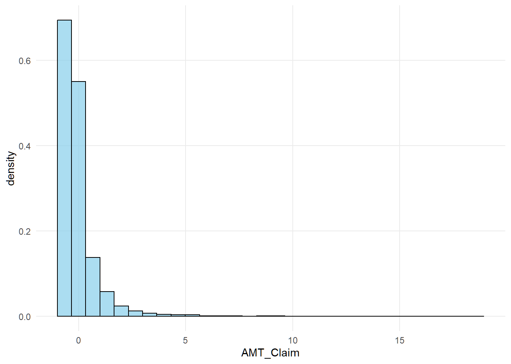
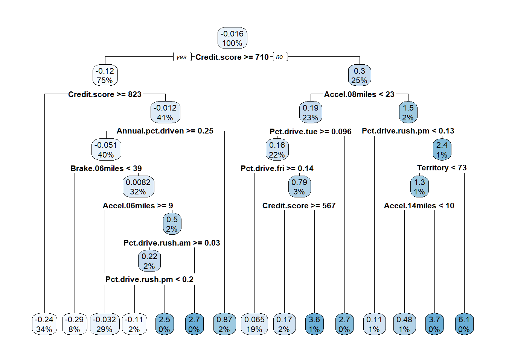
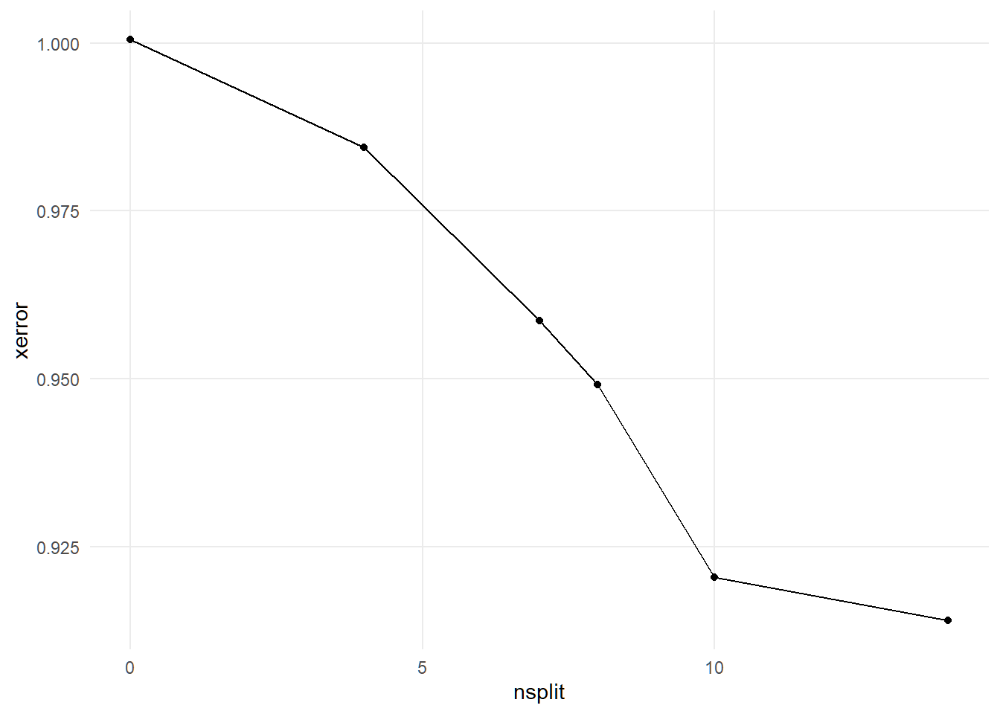
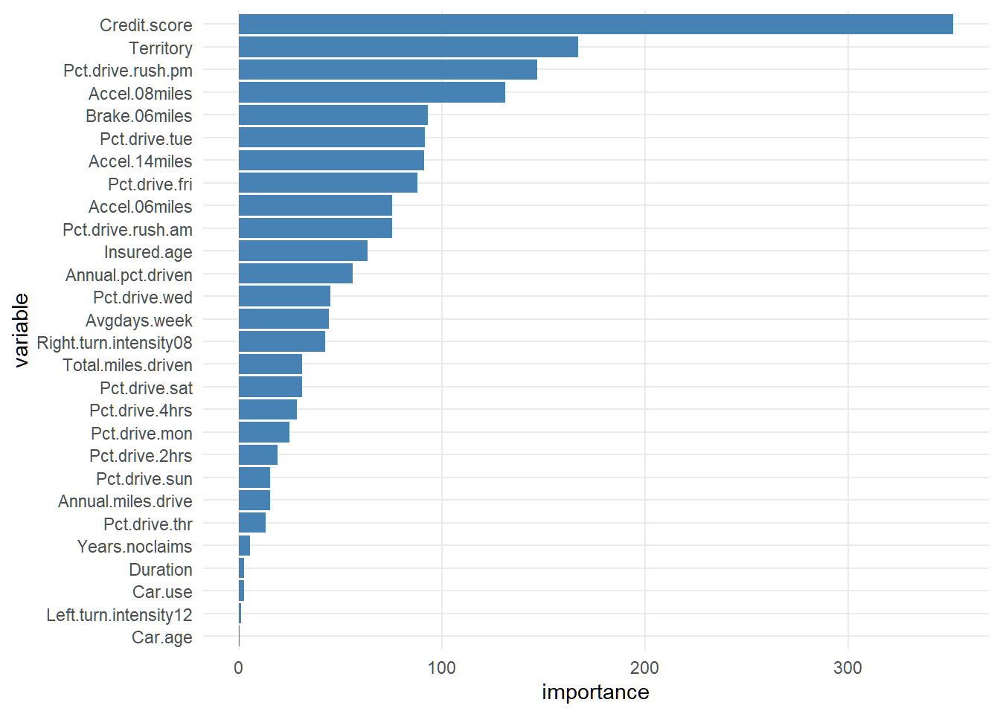
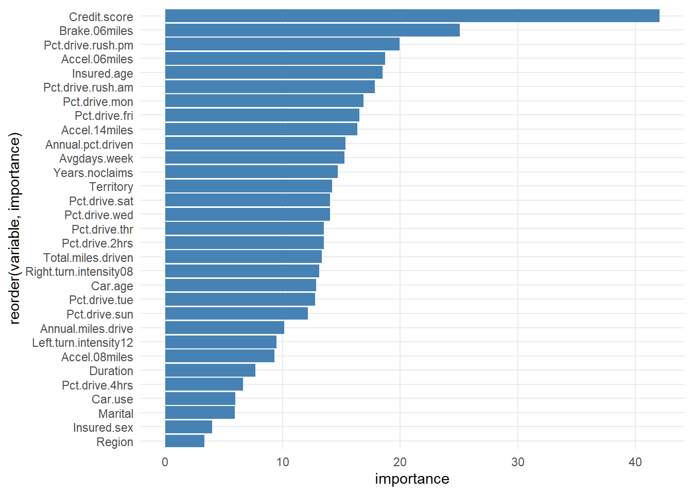
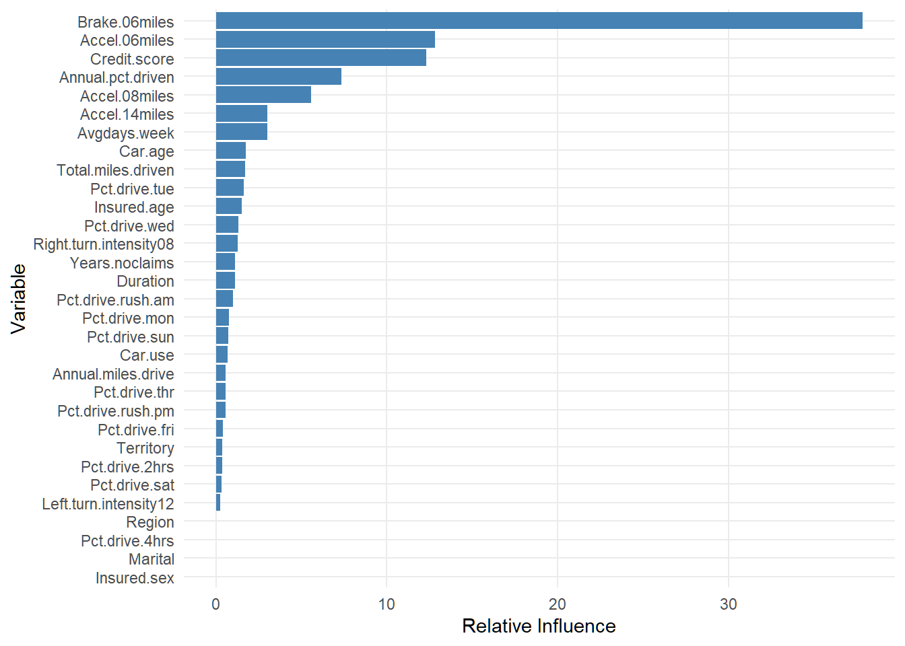
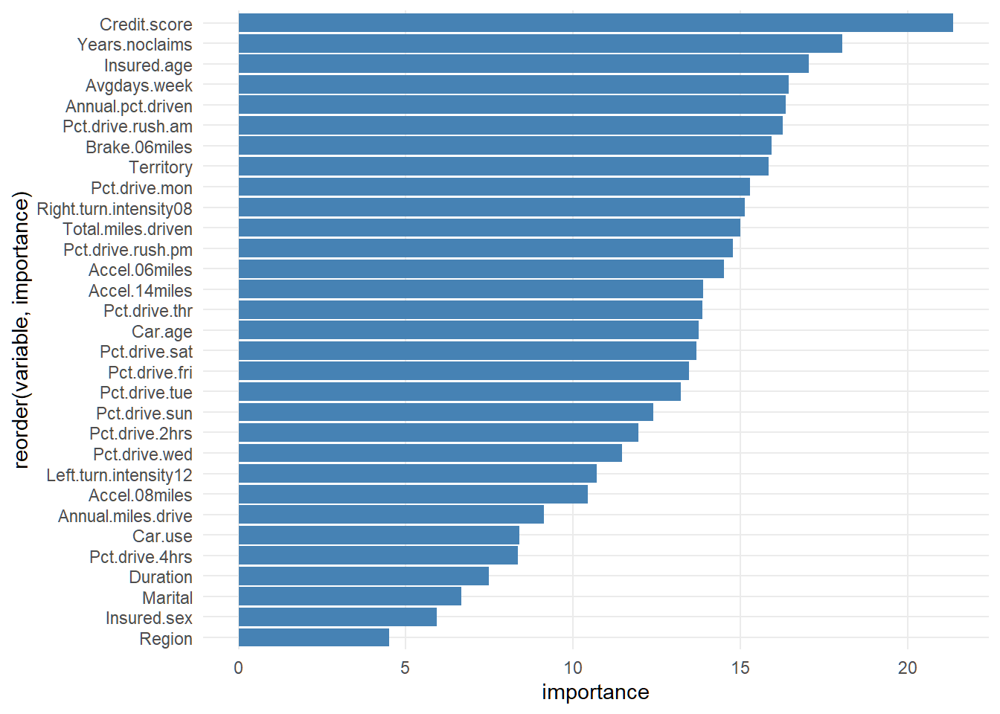

Code
load("E:/Personal Website/blogs/claim prediction/telematics.RData")
dat_1 <- dat_1 |>
mutate(across(where(is.character), as.factor))
dat_1$AMT_Claim <- scale(dat_1$AMT_Claim)Project Goal
The main goal is how to develop a model that predicts the amount of claim(AMT Clain) using telematics.RData. For additional information regarding the data, refer to https://www.mdpi.com/2227-9091/9/4/58.
Exploratory Data Analysis
There are no missing values. We found 84 observations with negative car age. Negative car age does not make sense so we exclude these observations. Using the findCorrelation() function in R, we identify variables highly correlated(\(>= 0.8\)) with other variables. The following variables are then excluded. We also exclude the number of claims during observations(NB_claim). NB_claim is considered as a response in the original article.
Code
tele_df <- dat_1 |> dplyr::filter(Car.age >= 0) |>
mutate(across(where(is.character), as.factor))
#percentage of missing values
naniar::pct_miss(tele_df)[1] 0Code
num_variables <- select(tele_df, where(is.numeric)) |> select(-AMT_Claim)
cor_matrix <- cor(num_variables, use = "complete.obs")
high_cor_vars <- findCorrelation(cor_matrix, cutoff = .8, names = TRUE)
matrix(high_cor_vars, nrow = 4, ncol = 5, byrow = TRUE) |> kableExtra::kable()| Brake.11miles | Accel.11miles | Accel.09miles | Brake.12miles | Accel.12miles |
| Brake.09miles | Brake.14miles | Pct.drive.wkday | Pct.drive.wkend | Brake.08miles |
| Left.turn.intensity10 | Left.turn.intensity09 | Left.turn.intensity11 | Left.turn.intensity08 | Right.turn.intensity11 |
| Right.turn.intensity10 | Right.turn.intensity09 | Right.turn.intensity12 | Pct.drive.3hrs | Brake.11miles |
Code
tele_df_clean <- select(tele_df, -any_of(c(high_cor_vars, "NB_Claim")))My final dataset for modeling has 32 variables with 3780 observations.
Code
summarise(tele_df_clean,
across(
where(is.numeric),
.fns = list(
min = min,
median = median,
mean = mean,
stdev = sd,
q25 = ~ quantile(., 0.25),
q75 = ~ quantile(., 0.75),
max = max
),
.names = "{.col}_{.fn}"
)) |>
pivot_longer(
cols = everything(),
names_to = c("variable", "stat"),
names_pattern = "^(.*)_(min|median|mean|stdev|q25|q75|max)$"
) |>
pivot_wider(names_from = stat, values_from = value) |>
arrange(variable) |> #alphabetical order
kable(digits = 3, caption = "Summary statistics") |>
kable_styling(full_width = TRUE,
bootstrap_options = c("striped", "hover"))| variable | min | median | mean | stdev | q25 | q75 | max |
|---|---|---|---|---|---|---|---|
| AMT_Claim | -0.659 | -0.296 | -0.019 | 0.961 | -0.517 | 0.076 | 18.606 |
| Accel.06miles | 0.000 | 31.000 | 52.888 | 63.514 | 14.000 | 67.000 | 621.000 |
| Accel.08miles | 0.000 | 2.000 | 5.445 | 11.809 | 1.000 | 5.000 | 151.000 |
| Accel.14miles | 0.000 | 0.000 | 0.329 | 1.841 | 0.000 | 0.000 | 51.000 |
| Annual.miles.drive | 683.508 | 9320.565 | 9868.095 | 3994.933 | 6213.710 | 12427.420 | 31068.550 |
| Annual.pct.driven | 0.036 | 0.848 | 0.751 | 0.250 | 0.539 | 0.975 | 1.000 |
| Avgdays.week | 0.963 | 6.032 | 5.832 | 0.871 | 5.415 | 6.478 | 7.000 |
| Brake.06miles | 2.000 | 78.000 | 102.026 | 84.244 | 43.000 | 133.000 | 621.000 |
| Car.age | 0.000 | 4.000 | 4.656 | 3.603 | 2.000 | 7.000 | 18.000 |
| Credit.score | 453.000 | 790.000 | 768.181 | 91.891 | 714.000 | 838.000 | 900.000 |
| Duration | 181.000 | 366.000 | 346.437 | 52.427 | 365.000 | 366.000 | 366.000 |
| Insured.age | 18.000 | 47.000 | 46.810 | 14.534 | 35.000 | 57.000 | 90.000 |
| Left.turn.intensity12 | 0.000 | 1.000 | 1318.778 | 20084.448 | 0.000 | 9.000 | 441232.000 |
| Pct.drive.2hrs | 0.000 | 0.002 | 0.005 | 0.007 | 0.001 | 0.006 | 0.094 |
| Pct.drive.4hrs | 0.000 | 0.000 | 0.000 | 0.001 | 0.000 | 0.000 | 0.045 |
| Pct.drive.fri | 0.007 | 0.156 | 0.158 | 0.026 | 0.143 | 0.170 | 0.400 |
| Pct.drive.mon | 0.015 | 0.140 | 0.140 | 0.024 | 0.126 | 0.153 | 0.309 |
| Pct.drive.rush.am | 0.000 | 0.083 | 0.099 | 0.071 | 0.045 | 0.137 | 0.406 |
| Pct.drive.rush.pm | 0.001 | 0.140 | 0.147 | 0.062 | 0.106 | 0.178 | 0.436 |
| Pct.drive.sat | 0.003 | 0.135 | 0.137 | 0.036 | 0.116 | 0.155 | 0.516 |
| Pct.drive.sun | 0.006 | 0.111 | 0.111 | 0.033 | 0.091 | 0.130 | 0.305 |
| Pct.drive.thr | 0.009 | 0.155 | 0.156 | 0.026 | 0.142 | 0.169 | 0.498 |
| Pct.drive.tue | 0.003 | 0.147 | 0.150 | 0.027 | 0.134 | 0.163 | 0.402 |
| Pct.drive.wed | 0.000 | 0.148 | 0.149 | 0.025 | 0.133 | 0.162 | 0.355 |
| Right.turn.intensity08 | 0.000 | 357.000 | 1472.644 | 15911.977 | 59.000 | 1068.000 | 380712.000 |
| Territory | 12.000 | 63.000 | 56.649 | 23.183 | 36.000 | 76.000 | 91.000 |
| Total.miles.driven | 67.224 | 7772.176 | 8741.845 | 5469.612 | 4759.608 | 11361.270 | 41019.575 |
| Years.noclaims | 0.000 | 22.000 | 23.545 | 14.904 | 10.000 | 35.000 | 74.000 |
Code
tele_df_clean |>
select(where(is.character), where(is.factor)) |>
pivot_longer(cols = everything(),
names_to = "variable",
values_to = "level") |>
group_by(variable, level) |>
summarise(count = n(), .groups = "drop_last") |>
mutate(prop = count / sum(count)) |> ungroup() |>
arrange(variable, desc(count)) |>
kable(digits = 3, caption = "Frequency and Proportion of Categorical Variables") |>
kable_styling(full_width = FALSE,
bootstrap_options = c("striped", "hover"))| variable | level | count | prop |
|---|---|---|---|
| Car.use | Commute | 2259 | 0.598 |
| Car.use | Private | 1348 | 0.357 |
| Car.use | Commercial | 152 | 0.040 |
| Car.use | Farmer | 21 | 0.006 |
| Insured.sex | Male | 2011 | 0.532 |
| Insured.sex | Female | 1769 | 0.468 |
| Marital | Married | 2444 | 0.647 |
| Marital | Single | 1336 | 0.353 |
| Region | Urban | 3113 | 0.824 |
| Region | Rural | 667 | 0.176 |
Code
ggplot(tele_df_clean, aes(x = AMT_Claim)) +
geom_histogram(
aes(y = after_stat(density)),
bins = 30,
fill = "skyblue",
color = "black",
alpha = 0.7
)
The distribution of standardized claims is right skewed.
Code
split <- sample.split(tele_df_clean$AMT_Claim, SplitRatio = .8)
train_df <- subset(tele_df_clean,split == TRUE)
test_df <- subset(tele_df_clean, split == FALSE)
cat("Train data sample size:", nrow(train_df))Train data sample size: 3024Code
cat("Test data sample size:", nrow(test_df))Test data sample size: 756Models
Regression Tree
Code
insur_tree <- rpart(AMT_Claim ~ .,
data = train_df,
method = "anova",
"cp" = .008)
rpart.plot(insur_tree)
Code
insur_tree_importance <- with(insur_tree, tibble(
variable = names(variable.importance),
importance = as.numeric(variable.importance)
)) |> arrange(desc(importance)) |> slice_head(n = 100)
ggplot(insur_tree_importance,
aes(x = factor(variable, levels = rev(variable)), y = importance)) +
geom_col(fill = "steelblue") +
labs(x = "variable") +
coord_flip()
Code
amt_claim_hat <- predict(insur_tree, newdata = test_df)
insur_treemse <- mean((test_df$AMT_Claim - amt_claim_hat)^2)
cat("MSE of the regression tree before pruning:",
insur_treemse |> round(3))MSE of the regression tree before pruning: 0.802Code
cptable <- insur_tree$cptable
ggplot(cptable, aes(nsplit, xerror)) +
geom_point() +
geom_line()
Code
#prune the trees
ins_bestcp <- cptable[which.min(cptable[, "xerror"]), "CP"]
insur_pruntree <- prune(insur_tree, cp = ins_bestcp)
rpart.plot(insur_pruntree)
Code
with(insur_pruntree,
tibble(
variable = names(variable.importance),
importance = as.numeric(variable.importance)
)) |>
ggplot(aes(x = factor(variable, levels = rev(variable)), y = importance)) +
geom_col(fill = "steelblue") +
labs(x = "variable") +
coord_flip()
Code
#after prunning prediction
prune_amtclaim_hat <- predict(insur_pruntree, newdata = test_df)
prune_mse <- mean((test_df$AMT_Claim - prune_amtclaim_hat)^2)
cat("MSE after pruning:", prune_mse)MSE after pruning: 0.8019689Code
mse_dif <- ((insur_treemse - prune_mse) / (insur_treemse)) * 100
cat("MSE reduction:", mse_dif |> round(3))MSE reduction: 0Bagging
Code
#---------------------choosing best ntrees----------------
#| fig-cap: "Optimal number of trees for bagging"
#---------------------trees to grow--------------------------
ntree_values <- c(50, 100, 200, 300, 500)
# # Run cross-validation in parallel
# bagging_cverrors <- foreach(n = ntree_values,
# .combine = rbind,
# .packages = "caret") %dopar% {
# model <- train(
# AMT_Claim ~ .,
# data = train_df,
# method = "rf",
# trControl = trainControl(method = "cv", number = 10),
# ntree = n,
# importance = TRUE
# )
#
# data.frame(ntree = n, RMSE = min(model$results$RMSE))
# }
# bagging_cverrors <- write_csv(bagging_cverrors, "bagging_cverrors")
# bagging_cverrors <- read_csv("bagging_cverrors")
# ggplot(bagging_cverrors, aes(ntree, RMSE))+
# geom_point()+
# geom_line()
# #
# # bagging_bestntree <- bagging_cverrors$ntree[which.min(bagging_cverrors$RMSE)]Code
# #-----------------bagging model---------------------------------
# #---------------------------------------------------------------------
insur_bagging <- randomForest(
AMT_Claim ~ .,
data = train_df,
importance = TRUE,
ntree = 500,
mtry = floor(ncol(train_df) - 1)
)
# varImpPlot(insur_bagging, main = "")
#variable importance plot using ggplot
importance(insur_bagging) %>% as.data.frame() %>%
mutate(variable = rownames(.)) %>%
rename(importance= `%IncMSE`) %>%
arrange(desc(importance)) %>%
ggplot(aes(x = reorder(variable, importance), y = importance))+
geom_bar(stat = "identity", fill = "steelblue")+
coord_flip()
Code
insurbag_hat <- predict(insur_bagging, newdata = test_df)
bagging_mse <- mean((test_df$AMT_Claim- insurbag_hat)^2)
cat("Bagging MSE:", bagging_mse)Bagging MSE: 0.4942471Boosting
Code
#---------------------------boosting ntree search--------------------------------------------
# boosting_cv <- foreach(n = ntree_values,
# .combine = rbind,
# .packages = "gbm") %dopar% {
# set.seed(123)
# model <- gbm(
# AMT_Claim ~ .,
# data = train_df,
# distribution = "gaussian",
# n.trees = n,
# shrinkage = 0.01,
# interaction.depth = 1,
# n.minobsinnode = 10,
# cv.folds = 10,
# verbose = FALSE
# )
#
# data.frame(n_tree = n, cv_error = min(model$cv.error))
# }
#
# boosting_cv |>
# ggplot(aes(n_tree, cv_error))+
# geom_point()+
# geom_line()
# boosting_bestntree <- boosting_cv$n_tree[which.min(boosting_cv$cv_error)]
insur_boosting <- gbm(
AMT_Claim ~ .,
data = train_df,
distribution = "gaussian",
n.trees = 500,
interaction.depth = 1
)
insur_boostingsummary <- summary(insur_boosting, plotit = FALSE)
ggplot(insur_boostingsummary, aes(x = reorder(var, rel.inf), y = rel.inf)) +
geom_col(fill = "steelblue") +
coord_flip()+
labs(x = "Variable", y = "Relative Influence")
Code
#---------------------------boosting prediction--------------------------
boost_amthat <- predict(insur_boosting, newdata = test_df)
boosting_insurmse <- mean((test_df$AMT_Claim - boost_amthat)^2)
cat("Boosting MSE:", boosting_insurmse)Boosting MSE: 0.6746562Random Forest
Code
rf_claim <- randomForest(
AMT_Claim ~ .,
data = train_df,
importance = TRUE,
mtry = floor(sqrt(ncol(train_df) - 1)),
ntree = 500
)
#
# varImpPlot(rf_claim, main = "")
#variable importance with ggplot
importance(rf_claim) %>% as.data.frame() %>%
mutate(variable = rownames(.)) %>%
rename(importance= `%IncMSE`) %>%
arrange(desc(importance)) %>%
ggplot(aes(x = reorder(variable, importance), y = importance))+
geom_bar(stat = "identity", fill = "steelblue")+
coord_flip()
Code
#predict on test set and compute mse
rf_yhat <- predict(rf_claim, newdata = test_df)
rf_mse <- mean((test_df$AMT_Claim - rf_yhat)^2)
cat("RandomForest MSE:", rf_mse)RandomForest MSE: 0.4387962Model Comparison
Code
tibble(
method = c("Pruned regression tree", "Bagging", "Boosting", "RandomForest"),
mse = c(prune_mse, bagging_mse, boosting_insurmse, rf_mse)
) |>
kable(digits = 3, caption = "Model comparison")| method | mse |
|---|---|
| Pruned regression tree | 0.802 |
| Bagging | 0.494 |
| Boosting | 0.675 |
| RandomForest | 0.439 |